अर्थशास्त्र (कक्षा 10) - अध्याय 3
मुद्रा और साख (Money and Credit)
🌾 वस्तु विनिमय प्रणाली (Barter System)
- परिभाषा: मुद्रा के उपयोग के बिना वस्तुओं का वस्तुओं के लिए प्रत्यक्ष आदान-प्रदान 'वस्तु विनिमय प्रणाली' कहलाता है।
- आवश्यकताओं का दोहरा संयोग (Double Coincidence of Wants): जब दोनों पक्ष एक-दूसरे की वस्तुओं को खरीदने और बेचने पर परस्पर सहमत होते हैं, तो इसे 'आवश्यकताओं का दोहरा संयोग' कहा जाता है।
- वस्तु विनिमय प्रणाली में यह एक अनिवार्य पूर्व शर्त है।
- उदाहरण: यदि एक जूता निर्माता को गेहूं चाहिए, तो उसे ऐसे किसान को खोजना होगा जिसके पास अतिरिक्त गेहूं हो और साथ ही उसे जूतों की भी आवश्यकता हो।
- मुद्रा की भूमिका: मुद्रा विनिमय प्रक्रिया में एक मध्यस्थ (Intermediary) की भूमिका निभाकर 'दोहरे संयोग' की कठिन शर्त को पूरी तरह समाप्त कर देती है। इसलिए मुद्रा को 'विनिमय का माध्यम' (Medium of Exchange) कहा जाता है।
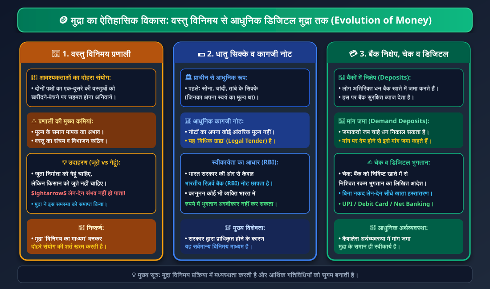
📊 चार्ट 3.1: मुद्रा का ऐतिहासिक विकास (Evolution of Money)
वस्तु विनिमय (दोहरे संयोग की कठिनाई) से लेकर धातु सिक्के, कागजी करेंसी और आधुनिक डिजिटल बैंकिंग व UPI का संपूर्ण तुलनात्मक मॉडल।
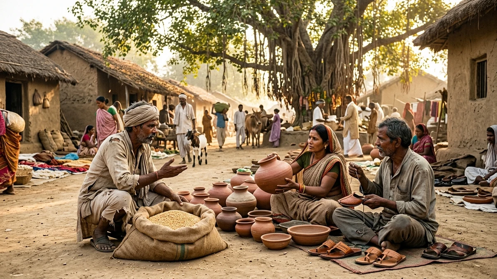
🖼️ चित्र 3.1: प्राचीन/ग्रामीण वस्तु विनिमय प्रणाली (Barter Exchange)
अनाज के बदले मिट्टी के बर्तन एवं चमड़े के जूतों का प्रत्यक्ष विनिमय, जो दोहरे संयोग के बिना संभव नहीं होता था।
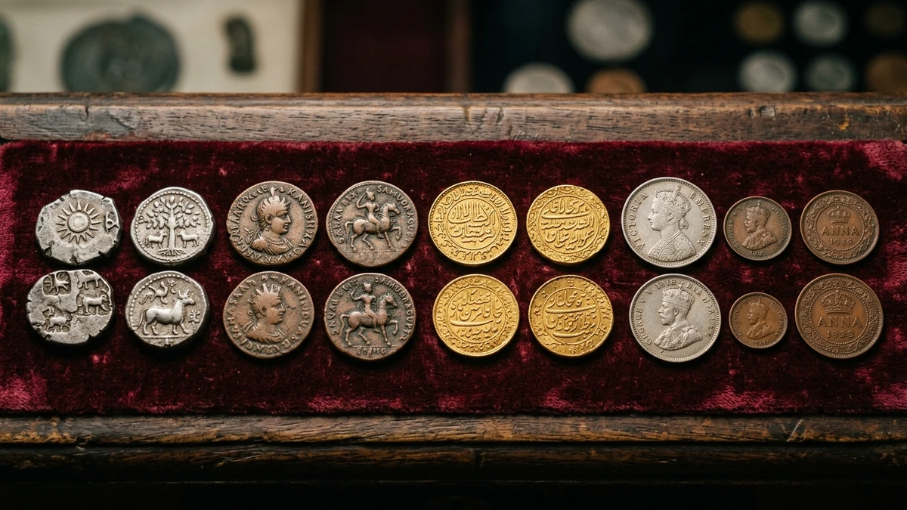
🪙 चित्र 3.2: ऐतिहासिक मुद्राओं का क्रमिक विकास (Evolution of Coins)
प्राचीन पंच-मार्क चांदी के सिक्के, मौर्य व गुप्त काल के सिक्के, मध्यकालीन मुहरें एवं आधुनिक सिक्के।
💵 आधुनिक करेंसी की विशेषताएं
- कोई आंतरिक मूल्य नहीं: प्राचीन सोने-चांदी के सिक्कों के विपरीत, आधुनिक करेंसी (कागज के नोट व साधारण धातु के सिक्के) का अपना कोई अमूल्य धातु उपयोग नहीं होता।
- स्वीकार्यता का कानूनी आधार (Legal Tender):
- इसे विनिमय का माध्यम इसलिए स्वीकार किया जाता है क्योंकि इसे देश की सरकार द्वारा अधिकृत किया जाता है।
- भारत में केंद्र सरकार की ओर से भारतीय रिज़र्व बैंक (Reserve Bank of India - RBI) करेंसी नोट जारी करता है।
- भारतीय कानून के अनुसार, कोई भी व्यक्ति या संस्था भारत में लेनदेन के लिए रुपये में किए गए भुगतान को कानूनी रूप से अस्वीकार नहीं कर सकता।
💵 चित्र 3.3: आधुनिक भारतीय मुद्रा (Modern Indian Currency)
आरबीआई द्वारा जारी प्राधिकृत कागजी नोट एवं सिक्के, जो भारत में सर्वमान्य विधिक ग्राह्य विनिमय माध्यम हैं।
🏦 मांग जमा (Demand Deposits) की कार्यप्रणाली
- बैंक निक्षेप: लोग अपनी दैनिक आवश्यकताओं के बाद बचे अतिरिक्त धन को अपने नाम से बैंक खाता खोलकर सुरक्षित जमा कर देते हैं। बैंक इस जमा पर ब्याज (Interest) भी प्रदान करता है।
- मांग जमा की परिभाषा: चूंकि बैंक खातों में जमा धन को खाताधारक की मांग (Demand) पर कभी भी निकाला जा सकता है, इसलिए इसे 'मांग जमा' (Demand Deposit) कहा जाता है।
- चेक (Cheque) द्वारा भुगतान:
- चेक क्या है? चेक एक ऐसा कागजी दस्तावेज है जो बैंक को किसी व्यक्ति के खाते से उस व्यक्ति को, जिसके नाम पर चेक जारी किया गया है, एक विशेष निश्चित रकम का भुगतान करने का आदेश देता है।
- चेक के माध्यम से बिना नकदी (Cash) का इस्तेमाल किए सीधे बैंक खातों के बीच सुरक्षित भुगतान संभव हो जाता है।
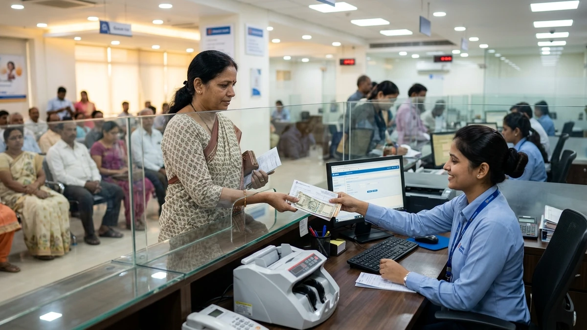
🏢 चित्र 3.4: बैंकों में निक्षेप / जमा व्यवस्था (Bank Deposits)
नागरिक अपनी बचत को सुरक्षित रखने और ब्याज अर्जित करने हेतु बैंक शाखा के टेलर काउंटर पर नकदी जमा करते हुए।
✍️ चित्र 3.5: चेक द्वारा सुरक्षित भुगतान (Cheque Payment Mechanism)
व्यापारिक लेन-देन में बिना नकदी का उपयोग किए बैंक चेक पर हस्ताक्षर कर सीधे खाता अंतरण करने की प्रक्रिया।
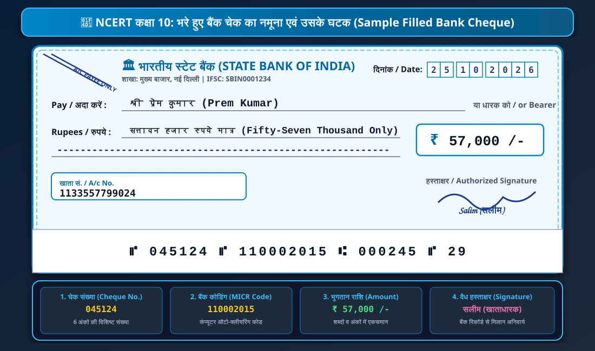
📑 NCERT चित्र 3.3: भरे हुए बैंक चेक का नमूना एवं इसके प्रमुख भाग (Sample Filled Cheque)
सलीम (जूता निर्माता) द्वारा प्रेम कुमार (चमड़ा विक्रेता) को ₹57,000 के भुगतान का वास्तविक चेक — चेक संख्या, MICR कोड, खाता संख्या एवं अधिकृत हस्ताक्षर।
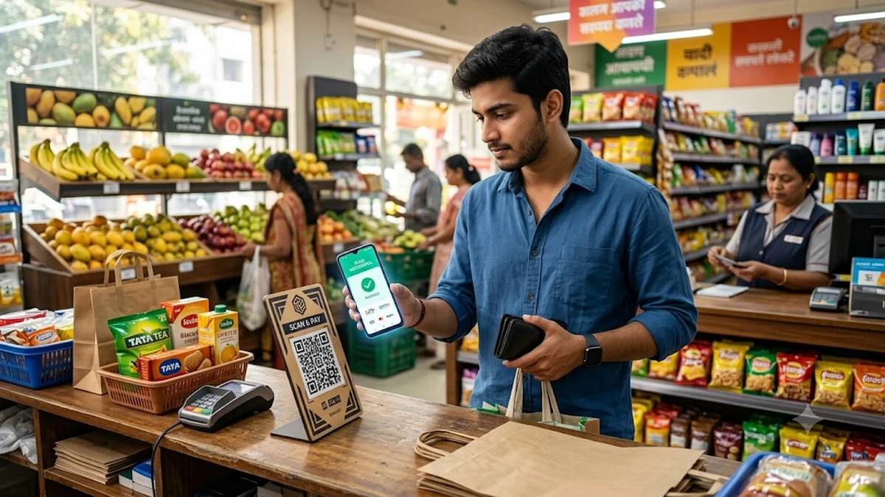
📱 चित्र 3.6: डिजिटल बैंकिंग एवं UPI भुगतान (Digital & UPI Payments)
स्मार्टफोन द्वारा क्यूआर कोड स्कैन कर पलक झपकते ही खुदरा दुकानों पर सुरक्षित कैशलेस भुगतान।
💳 चित्र 3.7: आधुनिक ATM एवं डेबिट कार्ड बैंकिंग (ATM Services)
24×7 नकदी निकासी और त्वरित बैंकिंग सेवाओं हेतु सुरक्षित ऑटोमेटेड टेलर मशीन (ATM) का उपयोग।
⚙️ बैंक कैसे कार्य करते हैं?
- नकद कोष अनुपात (Cash Reserve Ratio - 15%): बैंक अपने पास कुल जमा राशि का केवल एक छोटा अनुपात (भारत में लगभग 15% नकद) रखते हैं। यह प्रावधान उन जमाकर्ताओं को नकद भुगतान करने के लिए होता है जो किसी भी दिन बैंक से धन निकालने आ सकते हैं।
- ऋण विस्तार (85% Loan Portfolio): बैंक अपनी जमा राशि के प्रमुख भाग (लगभग 85%) का उपयोग विभिन्न आर्थिक गतिविधियों हेतु ऋण (Loans / Credit) देने के लिए करते हैं।
- वित्तीय मध्यस्थ (Financial Intermediary): बैंक उन लोगों (जमाकर्ताओं), जिनके पास अतिरिक्त राशि है, और उन लोगों (कर्जदारों), जिन्हें राशि की आवश्यकता है, के बीच एक कुशल मध्यस्थ का कार्य करते हैं।
💎 बैंक कैसे मुनाफा कमाते हैं?
बैंक कर्जदारों से जो ब्याज दर वसूलते हैं, वह जमाकर्ताओं को दिए जाने वाले ब्याज से काफी अधिक होती है:
बैंक की शुद्ध आय =
कर्जदारों से ली गई उच्च ब्याज दर (उदा. 10%)
जमाकर्ताओं को दी गई अल्प ब्याज दर (उदा. 5%)
कर्जदारों से लिए गए ब्याज और जमाकर्ताओं को दिए गए ब्याज के बीच का यह अंतर (Spread) ही बैंकों की आय एवं लाभ का प्रमुख स्रोत है।
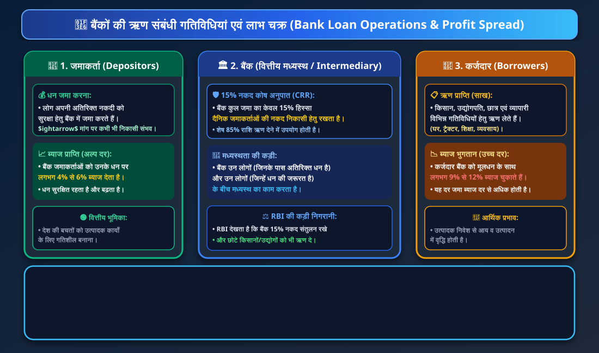
📊 चार्ट 3.2: बैंक ऋण कार्यप्रणाली एवं लाभ चक्र (Bank Loan Mechanism)
जमाकर्ता $
ightarrow$ बैंक (15% CRR रिज़र्व) $
ightarrow$ कर्जदार $
ightarrow$ ब्याज दर अंतर (Spread) से बैंक का शुद्ध मुनाफा।
🤝 चित्र 3.8: बैंक ऋण प्रक्रिया एवं वित्तीय सहयोग (Bank Loan Review)
बैंक अधिकारी द्वारा छोटे उद्यमियों और किसानों के ऋण आवेदनों का मूल्यांकन व औपचारिक स्वीकृति।
📋 साख (ऋण) क्या है?
साख (Credit) एक ऐसा समझौता है जिसके तहत ऋणदाता, कर्जदार को धन, वस्तुएं या सेवाएं इस वादे पर प्रदान करता है कि वह भविष्य में उनका भुगतान कर देगा।
| तुलना का आधार |
केस 1: सलीम (जूता निर्माता) 👞 |
केस 2: स्वप्ना (मूंगफली किसान) 🌾 |
| ऋण का उद्देश्य |
त्यौहार के मौसम में 3,000 जोड़ी जूतों के बड़े आर्डर के लिए कार्यशील पूंजी (चमड़ा व मजदूरी)। |
3 एकड़ खेत में मूंगफली की खेती के लिए खाद, बीज व कीटनाशक खरीदने हेतु। |
| ऋण का स्रोत |
चमड़ा आपूर्तिकर्ता से उधारी + व्यापारी से 1,000 जूतों का अग्रिम नकद भुगतान। |
गांव का स्थानीय साहूकार (अत्यधिक ऊंची ब्याज दर पर)। |
| उत्पादन परिणाम |
समय पर जूतों की सफल डिलीवरी, पूरा भुगतान प्राप्त हुआ। |
कीटों व सूखे के कारण फसल पूरी तरह बर्बाद। महंगे कीटनाशक भी विफल रहे। |
| साख का अंतिम प्रभाव |
ऋण चुकता किया, भारी मुनाफा कमाया, आर्थिक स्थिति बेहतर हुई। (उत्पादक साख) |
कर्ज नहीं चुका पाई, ब्याज बढ़ता गया। अंततः कर्ज उतारने हेतु जमीन का हिस्सा बेचना पड़ा। |
| निष्कर्ष |
✅ साख ने आय बढ़ाने में महत्वपूर्ण व सकारात्मक भूमिका निभाई। |
❌ साख ने स्वप्ना को 'ऋण-जाल' (Debt Trap) में धकेल दिया। |
⚠️ ऋण-जाल (Debt Trap) क्या है?
ऋण-जाल: यह एक ऐसी गंभीर वित्तीय स्थिति है जहां कर्जदार अपने पुराने ऋण और उस पर चढ़ते ब्याज को चुकाने में असमर्थ होता है और उसे कर्ज चुकाने के लिए नया कर्ज लेना पड़ता है या अपनी उत्पादक संपत्तियां (जैसे जमीन) बेचनी पड़ती हैं। साख कर्जदार को ऐसी स्थिति में धकेल देती है जिससे बाहर निकलना अत्यंत कष्टदायी होता है।
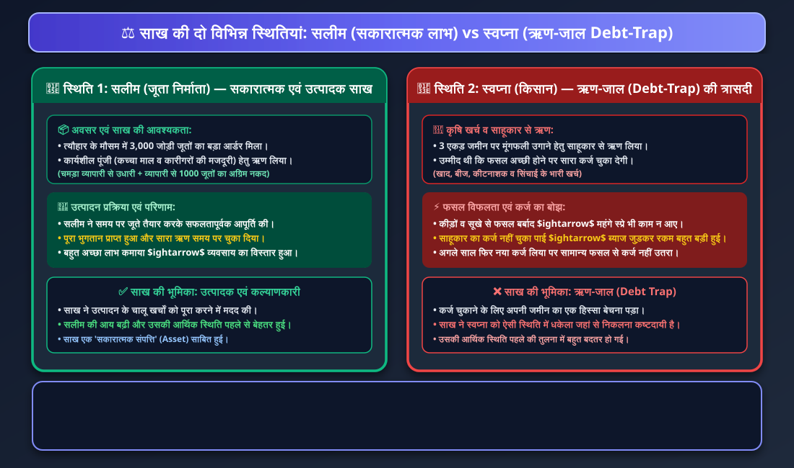
📊 चार्ट 3.3: साख के दो विपरीत परिणाम (Salim vs Swapna Case Study)
सलीम की उत्पादक सफलता (सकारात्मक संपत्ति) बनाम स्वप्ना की फसल विफलता व ऋण-जाल (विनाशकारी साख)।
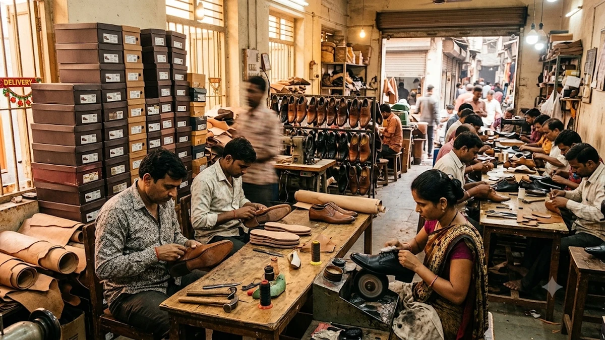
👞 चित्र 3.9: उत्पादक साख - जूता निर्माण कार्यशाला (Salim's Workshop)
साख की सहायता से समय पर त्यौहार का बड़ा आर्डर पूरा कर मुनाफा अर्जित करता लघु उद्योग।
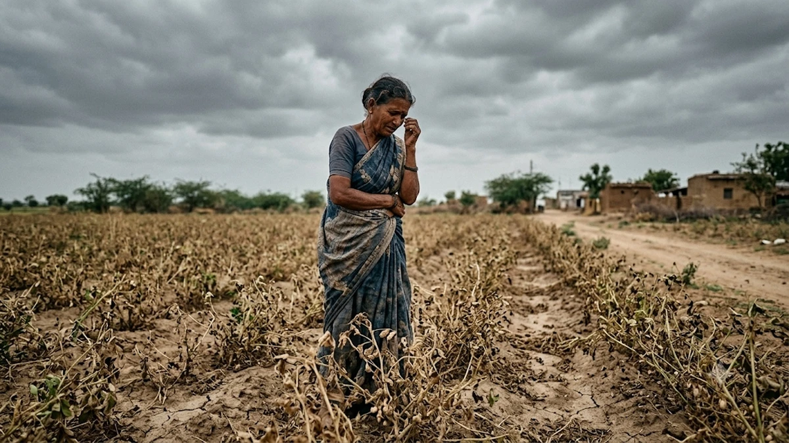
🌾 चित्र 3.10: फसल विफलता एवं ऋण-जाल (Swapna's Crop Failure & Debt Trap)
सूखे व कीटों से फसल नष्ट होने पर साहूकार के कर्ज के बोझ तले दबी लाचार ग्रामीण किसान।
📑 ऋण की शर्तें (Terms of Credit) के 4 प्रमुख तत्व
- ब्याज दर (Interest Rate): ऋणदाता कर्जदार से मूलधन के अलावा अतिरिक्त राशि वसूलता है, जो पूर्व-निर्धारित प्रतिशत होती है।
- समर्थक ऋणाधार / संपार्श्विक (Collateral): ऐसी संपत्ति (जैसे भूमि, भवन, वाहन, पशु, बैंकों में जमा पूंजी) जिसका मालिक कर्जदार है और वह इसका उपयोग ऋणदाता को तब तक गारंटी के रूप में देता है जब तक कि ऋण चुकता न हो जाए।
- यदि कर्जदार ऋण चुकाने में विफल रहता है, तो ऋणदाता को भुगतान प्राप्त करने के लिए उस संपत्ति को बेचने का कानूनी अधिकार होता है।
- आवश्यक प्रलेख/कागजात (Documentation Required): पहचान पत्र, निवास प्रमाण, आय प्रमाण पत्र, जमीन के पट्टे, वेतन पर्ची आदि दस्तावेज।
- भुगतान का स्वरूप/तरीका (Mode of Repayment): ऋण की अदायगी किस्तों (EMIs) में होगी, मासिक होगी या फसल कटाई के बाद एकमुश्त होगी।
📄 चित्र 3.11: समर्थक ऋणाधार / संपार्श्विक (Collateral Assets)
भूमि रजिस्ट्री दस्तावेज, वाहन की चाबी एवं बैंक सावधि जमा रसीद - बैंक ऋण हेतु आवश्यक सुरक्षा संपत्तियां।
| तुलना का बिंदु |
औपचारिक साख क्षेत्रक (Formal Sector) 🏦 |
अनौपचारिक साख क्षेत्रक (Informal Sector) 💸 |
| प्रमुख स्रोत |
वाणिज्यिक बैंक, क्षेत्रीय ग्रामीण बैंक एवं सहकारी समितियां। |
साहूकार, महाजन, व्यापारी, भूस्वामी, रिश्तेदार एवं मित्र। |
| ब्याज दर |
उचित एवं बहुत कम (सामान्यतः 7% से 12% वार्षिक)। |
अत्यधिक ऊंची व मनमानी (36% से 60%+ वार्षिक)। |
| नियामक संस्था (Supervision) |
भारतीय रिज़र्व बैंक (RBI) द्वारा कड़ी निगरानी व नियंत्रण। |
निगरानी रखने वाली कोई सरकारी संस्था नहीं है। |
| समर्थक ऋणाधार (Collateral) |
ऋण प्राप्त करने हेतु समर्थक ऋणाधार व दस्तावेज अनिवार्य। |
बिना संपार्श्विक के भी व्यक्तिगत जान-पहचान पर ऋण मिल जाता है। |
| वसूली के तरीके |
कानूनी, पारदर्शी और मानवीय नियम। |
अनुचित, कठोर एवं शोषणकारी तरीके। |
| कर्जदार पर प्रभाव |
आय में वृद्धि, आर्थिक प्रगति और सुरक्षा। |
अधिकांश आय ब्याज में समाप्त, ऋण-जाल का भारी खतरा। |
🛡️ RBI औपचारिक क्षेत्रक में बैंकों पर कैसे निगरानी रखता है?
- 1. नकद कोष (CRR) की जांच: RBI नजर रखता है कि बैंक वास्तव में अपनी कुल जमा का 15% नकद शेष दैनिक निकासी के लिए बनाए रख रहे हैं या नहीं।
- 2. न्यायसंगत ऋण वितरण: RBI यह सुनिश्चित करता है कि बैंक केवल लाभ कमाने वाले बड़े उद्योगपतियों और व्यापारियों को ही ऋण न दें, बल्कि छोटे किसानों, छोटे कुटीर उद्योगों और छोटे कर्जदारों को भी पर्याप्त सस्ता ऋण उपलब्ध कराएं।
- 3. आवधिक रिपोर्टिंग: बैंकों को समय-समय पर RBI को लिखित जानकारी देनी पड़ती है कि वे किन-किन व्यक्तियों को, कितना ऋण और किस ब्याज दर पर दे रहे हैं।
📊 भारत में साख का कटु सत्य एवं भविष्य की आवश्यकता
- गरीब बनाम अमीर खाई: वर्तमान में शहरी अमीर परिवारों के 85% ऋण औपचारिक स्रोतों (सस्ते बैंक ऋण) से आते हैं, जबकि ग्रामीण गरीब परिवारों के 85% ऋण अनौपचारिक स्रोतों (महंगे साहूकारों) से आते हैं!
- सस्ते ऋण का महत्व: देश के तीव्र और समावेशी आर्थिक विकास के लिए "सस्ता और सामर्थ्य के अनुकूल साख (Cheap & Affordable Credit)" अति आवश्यक है।
- समाधान: ग्रामीण क्षेत्रों में बैंकों और सहकारी समितियों की शाखाओं का बड़े पैमाने पर विस्तार किया जाना चाहिए ताकि गरीबों की साहूकारों पर निर्भरता समाप्त हो सके।
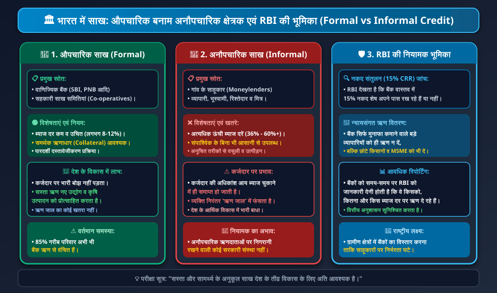
📊 चार्ट 3.4: औपचारिक बनाम अनौपचारिक साख एवं RBI की भूमिका (Credit in India)
बैंक/सहकारी समिति बनाम साहूकार प्रणाली की संपूर्ण तुलना एवं भारतीय रिज़र्व बैंक (RBI) का त्रैमासिक नियामक ढांचा।
🏛️ चित्र 3.12: औपचारिक साख क्षेत्रक - वाणिज्यिक बैंक (Commercial Bank)
विश्वसनीय एवं कम ब्याज दर पर ऋण उपलब्ध कराने वाली आधुनिक सार्वजनिक/वाणिज्यिक बैंकिंग व्यवस्था।
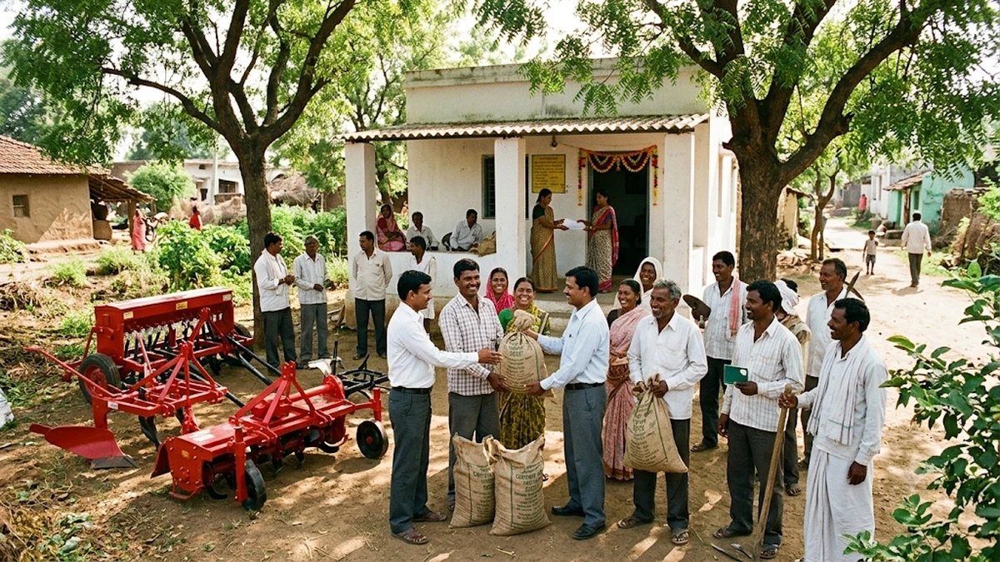
🌾 चित्र 3.13: ग्रामीण सहकारी साख समिति (Agricultural Cooperative)
किसानों को खाद, उन्नत बीज व कृषि यंत्रों हेतु किफायती साख प्रदान करती ग्रामीण सहकारी संस्था।
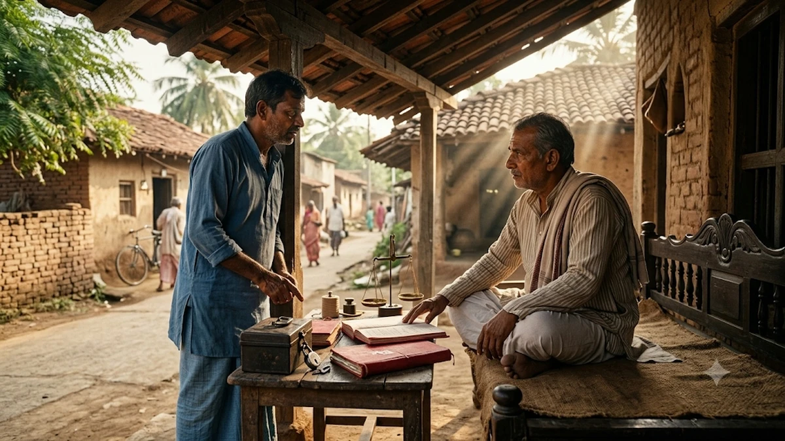
📜 चित्र 3.14: अनौपचारिक साख - पारंपरिक ग्रामीण साहूकार (Moneylender)
बहीखातों में अत्यधिक ब्याज दर पर ग्रामीणों को ऋण देने वाली शोषणकारी अनौपचारिक साख प्रणाली।
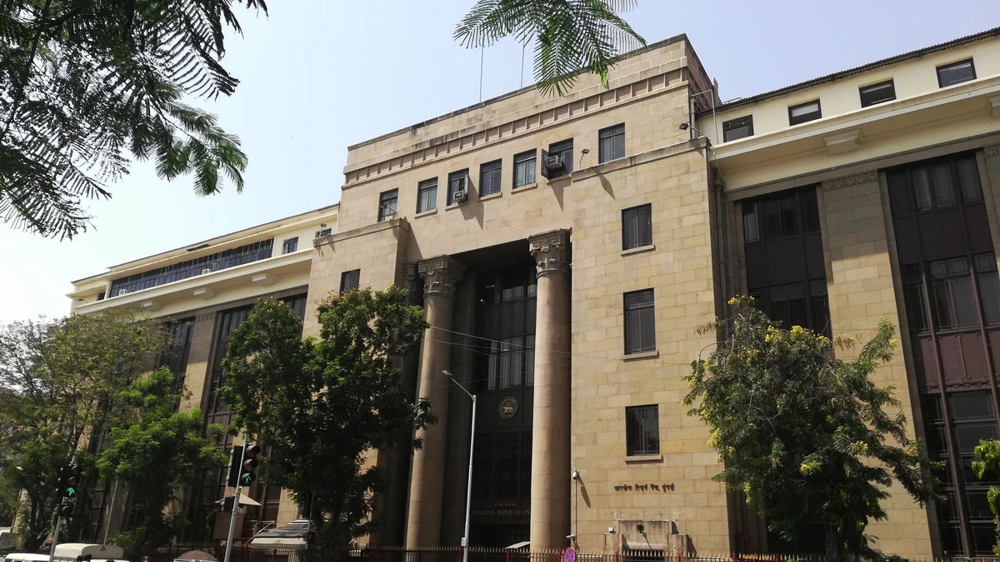
🏦 चित्र 3.15: भारतीय रिज़र्व बैंक (Reserve Bank of India - RBI HQ)
भारत का केंद्रीय बैंक, जो संपूर्ण बैंकिंग प्रणाली और औपचारिक साख के न्यायसंगत वितरण की निगरानी करता है।
🤝 स्वयं सहायता समूह (SHG) क्या है?
- समूह का गठन: एक विशिष्ट स्वयं सहायता समूह में एक ही गांव या पड़ोस की 15 से 20 महिलाएं संगठित होती हैं, जो नियमित रूप से मिलती हैं और बचत करती हैं।
- नियमित बचत: प्रति सदस्य बचत ₹25 से लेकर ₹100 या अधिक तक हो सकती है, जो सदस्यों के सामर्थ्य पर निर्भर करती है।
- आंतरिक ऋण (Internal Microloans): सदस्य अपनी छोटी-मोटी जरूरतों (जैसे बीमारी, बीज-खाद, बच्चों की फीस) के लिए समूह से ही कम ब्याज पर छोटा ऋण ले सकते हैं। इस पर ब्याज साहूकार से बहुत कम होता है।
- बैंक लिंकेज एवं संपार्श्विक-मुक्त ऋण (Collateral-Free Bank Loans):
- यदि समूह 1-2 वर्ष तक नियमित बचत करता है, तो वह बैंक से समूह के नाम पर बिना किसी समर्थक ऋणाधार (Collateral) के बड़ा ऋण लेने योग्य बन जाता है।
- ऋण चुकाने का उत्तरदायित्व किसी एक व्यक्ति का नहीं, बल्कि पूरे समूह का सामूहिक होता है। इसलिए बैंक निर्धन महिलाओं को बिना गिरवी संपत्ति के भी सहर्ष ऋण प्रदान करते हैं।
🌟 SHG के दोहरे लाभ: आर्थिक एवं सामाजिक सशक्तिकरण
- 1. महिलाओं का आर्थिक स्वावलंबन: महिलाएं सिलाई मशीन, हथकरघा, मवेशी खरीदकर या कुटीर उद्योग लगाकर स्वरोजगार प्रारंभ करती हैं और परिवार की मुख्य आय में योगदान देती हैं।
- 2. सामाजिक मंच (Social Platform): SHG की नियमित बैठकों में महिलाएं केवल वित्तीय मुद्दों पर ही नहीं, बल्कि स्वास्थ्य, पोषण, स्वच्छता, साक्षरता एवं घरेलू हिंसा जैसे महत्वपूर्ण सामाजिक विषयों पर भी संगठित होकर चर्चा और समाधान करती हैं।
- 3. बांग्लादेश ग्रामीण बैंक केस स्टडी:
- संस्थापक: प्रोफेसर मोहम्मद यूनुस (जिन्हें 2006 में नोबेल शांति पुरस्कार से सम्मानित किया गया)।
- इस बैंक ने बांग्लादेश के 81,600 से अधिक गांवों में 90 लाख से अधिक गरीब ऋणियों (जिनमें 97% महिलाएं हैं) को सूक्ष्म ऋण देकर गरीबी उन्मूलन का विश्वस्तरीय मॉडल प्रस्तुत किया।
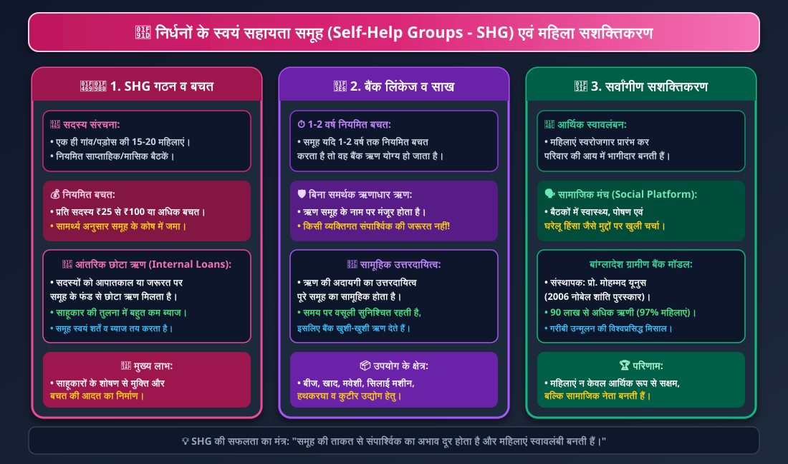
📊 चार्ट 3.5: स्वयं सहायता समूह (SHG) मॉडल एवं महिला सशक्तिकरण
15-20 महिलाओं की बचत $
ightarrow$ आंतरिक ऋण $
ightarrow$ बिना संपार्श्विक बैंक ऋण $
ightarrow$ स्वरोजगार व सामाजिक नेतृत्व।
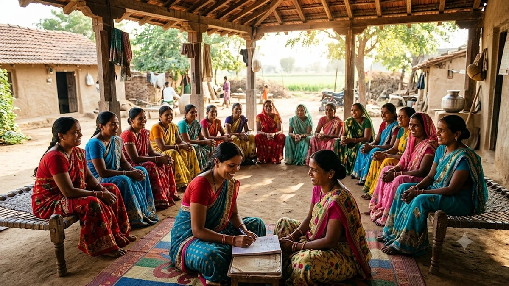
👩🦰 चित्र 3.16: महिला स्वयं सहायता समूह बैठक (SHG Weekly Meeting)
गांव में एकजुट होकर बचत का हिसाब-किताब करतीं एवं सूक्ष्म ऋण स्वीकृत करतीं आत्मनिर्भर ग्रामीण महिलाएं।
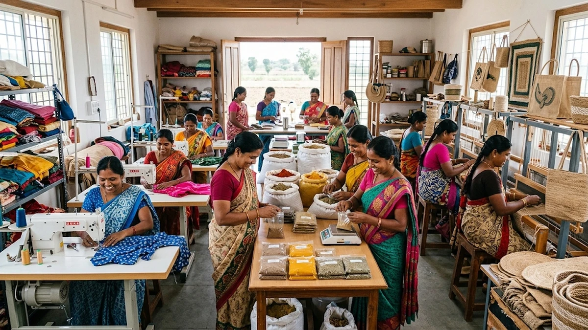
🧵 चित्र 3.17: SHG सूक्ष्म उद्यम एवं कुटीर उद्योग (Women Micro-Enterprises)
समूह ऋण की सहायता से सिलाई, हथकरघा व हस्तशिल्प कार्यशाला संचालित करती महिला उद्यमी।
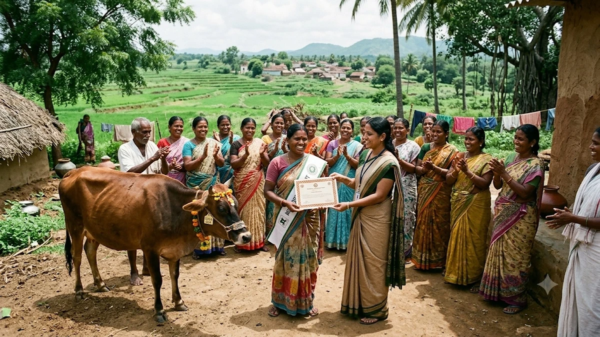
🇧🇩 चित्र 3.18: बांग्लादेश ग्रामीण बैंक मॉडल (Grameen Microcredit Model)
प्रो. मोहम्मद यूनुस द्वारा स्थापित नोबेल पुरस्कार विजेता सूक्ष्म साख प्रणाली, जिसने निर्धन महिलाओं का जीवन बदला।
🚀 चित्र 3.19: सुलभ साख एवं राष्ट्रीय आर्थिक समृद्धि (Affordable Credit Growth)
सस्ती ब्याज दरों पर मिलने वाले ऋण से आधुनिक कृषि, लघु विनिर्माण और अवसंरचना का तीव्र विकास।
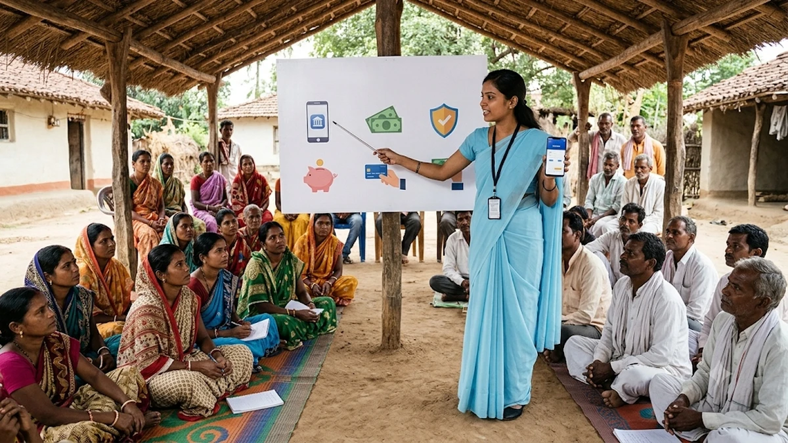
💡 चित्र 3.20: ग्रामीण वित्तीय साक्षरता शिविर (Financial Literacy Camp)
ग्रामीण नागरिकों को औपचारिक बैंकिंग, डिजिटल सुरक्षा और स्वयं सहायता समूहों के लाभों के प्रति जागरूक करने का अभियान।
🎯 बोर्ड परीक्षा में 100% अंक प्राप्ति हेतु स्मरणीय सूत्र
- मुद्रा विनिमय का माध्यम है: क्योंकि यह विनिमय प्रक्रिया में मध्यस्थता करती है और 'आवश्यकताओं के दोहरे संयोग' की अनिवार्यता को समाप्त करती है।
- विधिक ग्राह्य मुद्रा (Legal Tender): भारत में आरबीआई द्वारा जारी नोटों में भुगतान को कोई भी व्यक्ति कानूनी रूप से अस्वीकार नहीं कर सकता।
- मांग जमा (Demand Deposit): बैंक खातों में जमा वह धन जिसे खाताधारक अपनी मांग पर कभी भी चेक या एटीएम से निकाल सकता है।
- बैंक की आय का सूत्र:
बैंक लाभ = कर्जदारों से ली गई ब्याज दर — जमाकर्ताओं को दी गई ब्याज दर।
- 15% CRR नियम: बैंक कुल जमा का 15% नकद अपने पास रखते हैं और शेष 85% राशि ऋण देने में उपयोग करते हैं।
- ऋण की 4 शर्तें: ब्याज दर, समर्थक ऋणाधार (Collateral), आवश्यक दस्तावेज, एवं भुगतान का तरीका।
- समर्थक ऋणाधार (Collateral): कर्जदार की वह संपत्ति जिसे वह ऋणदाता के पास गारंटी के रूप में गिरवी रखता है।
- ऋण-जाल (Debt Trap): वह स्थिति जहां कर्ज चुकाने के लिए नया कर्ज लेना पड़े या जमीन बेचनी पड़े। (उदा. स्वप्ना का केस)।
- RBI के कार्य: बैंकों के 15% CRR की निगरानी, छोटे किसानों/उद्यमियों को ऋण सुनिश्चित करना, और आवधिक रिपोर्टिंग लेना।
- SHG (स्वयं सहायता समूह): 15-20 सदस्यों का समूह, नियमित बचत, बिना समर्थक ऋणाधार के बैंक ऋण, और महिलाओं का सर्वांगीण सशक्तिकरण।